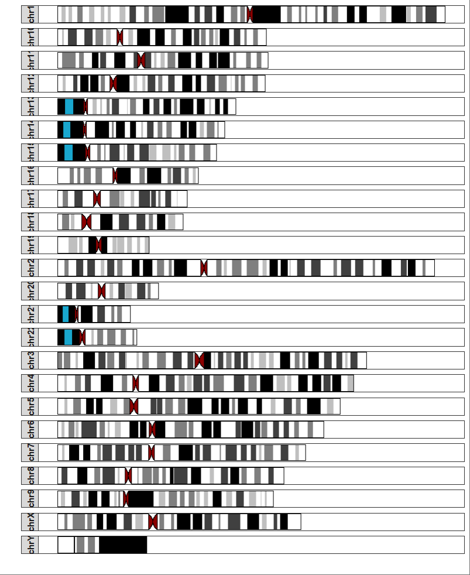
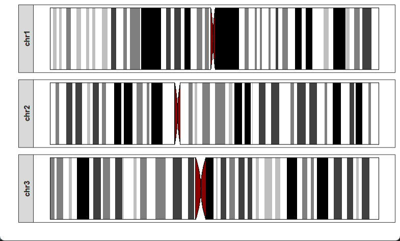
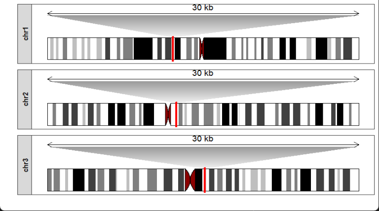
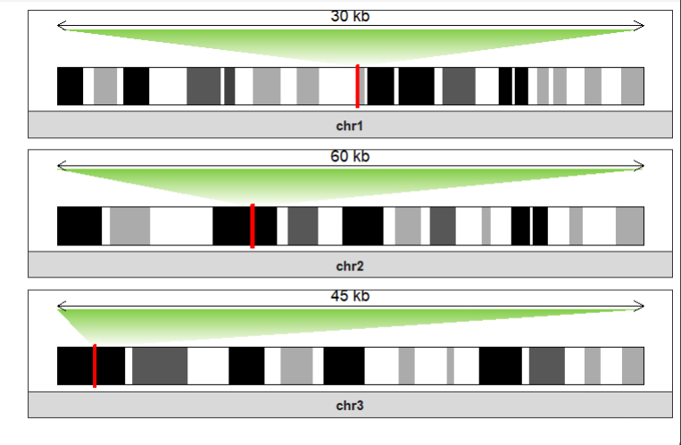

Chapter 3 Draw chromosome ideograms
A chromosomal ideogram is an idealized graphic representation of chromosomes. The common different shades of color positions on chromosome represent densities of gene. Here is a simple illustration:
- “gneg” refers to a chromosomal band that stains lightly with Giemsa stain.
- “gpos25”, “gpos50”, “gpos75”, and “gpos100” refer to chromosomal bands that stain progressively darker with Giemsa stain. These terms represent increasing proportions of GC-rich DNA in the band.
- “acen” refers to the centromere or the specialized region of a chromosome that plays a role in cell division.
- “gvar” refers to a chromosomal band that has structural variation compared to the reference genome.
- “stalk” can have different meanings depending on the context, but in cytogenetics, it refers to a short arm protrusion that extends from the centromere.
3.2 Making plot
drawChromosome function allows you to plot chromosome ideogram structure:
drawChromosome(ideogram_obj = hg38_obj,
chromosomes = unique(hg38_obj$plot_df$chr),
facet_params = list(scales = "fixed"))
Selecting some chromosomes:

Zooming a region on chromosomes with a genomic position:
drawChromosome(ideogram_obj = hg38_obj,
chromosomes = c("chr1","chr2","chr3"),
zoom_region = c(10^8,10^8+300000))
Multiple regions are also accepted:
data("mm10_obj")
drawChromosome(ideogram_obj = mm10_obj,
chromosomes = c("chr1","chr2","chr3"),
zoom_region = list(chr1 = c(10^8,10^8+300000),
chr2 = c(0.6*10^8 + 300000,0.6*10^8+900000),
chr3 = c(0.1*10^8,0.1*10^8+450000)),
facet_params = list(strip.position = "bottom"),
zoom_col = c("white","#82CD47"))
3.3 Drawing gene density manually
If you want to calculate and plot gene densities by manual, please refer to 手把手教你绘制染色体结构图.